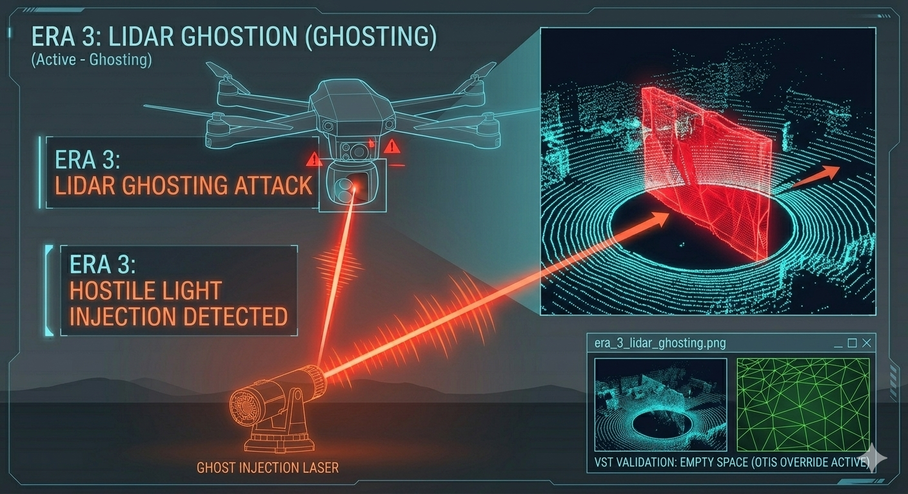

Era 3: LiDAR Injection (Ghosting)
As optical cameras proved vulnerable and GPS proved hackable, high-end defense platforms pivoted heavily to LiDAR. By firing millions of laser pulses, drones generated high-resolution 3D maps. Adversaries responded by spoofing the light itself, creating ghost obstacles.

The Exploit: Timing the Returned Pulse
LiDAR works by timing the time-of-flight of randomized laser pulses. An adversary monitors the targeted drone’s LiDAR frequency and fires a hostile laser pulse back into the drone's aperture. If the hostile pulse arrives before the true reflection, the sensor registers the closer distance, generating a fake object in its 3D environment.
Weaponizing Collision Avoidance
By projecting ghost walls in front of the drone, the adversary forces the drone's obstacle avoidance systems to violently slam on the brakes to avoid a non-existent collision, completely incapacitating the intercept capability.
SkyGuard Override: VST Spatial Validation
While LiDAR can be ghosted, dual-lens disparity geometry cannot. When the LiDAR sensor reports an obstacle, O.T.I.S. instantly validates the threat using the Volumetric Stereo-Triangulation (VST) depth engine. If the LiDAR claims a wall exists, but the VST depth mesh registers empty geometry, O.T.I.S. ignores the ghost obstacle and continues the intercept.